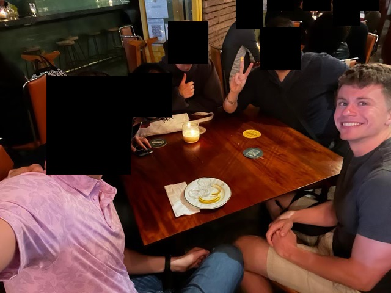

Mexico City trip report from 04-08 May 2023.
My friend, C, and I touched down in Mexico City (Ciudad de México, or CDMX, for short) around 2:00pm local time, getting a drawn-out greeting from the sprawling city while still in the air. Getting through immigration was painless. The Uber was a meager $15 to travel the 45-minute, 15-km distance across the city to Roma/Condesa area.
And what an introduction to the city it was. We passed beautiful murals painted on the sides of buildings, consisting of inspirational quotes and pictures relating to Mexican culture or history. Young children came up to the car attempting to sell us candies. A guy was getting a haircut in the back of a box truck parked on the side of the road. Buildings were painted all sorts of vibrant colors, giving a certain personality that many cities, especially the one I live in, severely lack. The apparent wealthiness of the neighborhoods increased as we continued west, eventually peaking in Roma (but growing as we went to Condesa then Polanco).
Yet our hotel, Hotel Royal Reforma, despite being in a nice, safe area, was surrounded by both regular and what I'll call "militarized" police. The militarized units were on the back of pickup trucks and some carried fully automatic rifles with a combination of 9 mm and (seemingly) 5.56 (based on magazine size). They looked relaxed and carefree as they joked around with each other, instantly calming our nerves and telling us it's probably just for show (which was later confirmed by a local). Normal police cars roamed around with their lights on to give more of a roaming presence.
Lunch was at Asaderos Grill and consisted of empanadas and their mixed taco plate: carne asada, chicken, and papas (potatoes). A Modelo washed everything down. It was here that I realized English wasn't as ubiquitous as I expected nor my friends had made it out to seem. No one working at the restaurant spoke English besides the basics of "thank you" and such. I was helpless as I pointed at the menu and awkwardly smiled while C and the waiter had a conversation. Sheeeeeeeeeeit.
We walked south to the neighborhood of Condesa and marveled at the landscaping. Trees were everywhere. And they weren't small, hastily-planted just to satisfy some minimum amount of green requirement. They were massive, mature, well-established, a member of the neighborhood protecting other residents from sun and rain and wind. They were beautiful. They lined the sidewalks on either side of the street and in the middle where a nice walking path was. My city has very little in the way of trees in its Condesa-like area. Maybe a few shrubs or some small, thin trees here and there, but nothing near the scope and scale of what CDMX offered.
After a few random turns here and there we stumbled upon Parque México and Parque España. Both were beautifully landscaped and one even had a small calisthenics park, so naturally I had to knock out 20 pull-ups to flex on the locals (and send to my cousin). Dinner was at the nice terrace restaurant Broka. We headed straight back to the hotel for an early night due to both of our early mornings.
Our 11-hour slumber had us recharged and ready for a long day of walking. We grabbed coffee (or in my case, a chai latte medio con leche de avena) at Tierra Garat, a Mexican coffee chain. With caffeine pumping through our veins we made the hour-long walk to Tree of the Victorious Night (formerly known as Tree of the Sad Night, depending on who you ask) where we were to meet up with our food guide. I had booked a food tour through Culinary Backstreets at the recommendation of tens or hundreds of Redditors via upvotes.
Here's a snippet of the description of the Azcapotzalco tour we took:
We will begin our day, as much of the neighborhood does, with a cafe de olla, spiced coffee, and a piece of sweet bread. Our second breakfast will be something more extraordinary: huevos encamisados, enchiladas, freshly-made juices as well as other incredible treats at a family-run backstreets restaurant that also happens to be one of Mexico City’s best. Later on, there will be succulent offal tacos, a reminder of slaughterhouses that were once located here. We’ll also stop into an artisanal tortilleria for a deep dive into the production of this most elemental of Mexican foods along with a tasting. And at a 3rd-generation street stand we will sample drinks that trace their roots to Aztec times. We’ll finish up in a cantina opened some 110 years ago by a family from Italy, where we’ll try the house cocktail and small dishes that reflect both classic Mexican traditions and the founders’ European roots. Once complete, an understanding of Azcapotzalco’s collage of foods and landscapes will emerge, showing the multiple sides of this unexplored neighborhood – one with perhaps the strongest personality in all of Mexico City.
This was way more fun than the above paragraph let it on to be. First stop was Nicos. I'm not a coffee drinker by any means but the spiced coffee was heavenly. Couple that with some sweet bread, egg-mole scramble, fried plantains, and chilaquiles and we got a superb breakfast. We then had a refreshing mango popsicle from a small shop, the perfect treat to satisfy a sweet tooth and cool us off as the sun made its way out.
A small tortilleria tour and tasting was next. We saw how the "dough" (there's another word I'm forgetting) was made and fed into the machine. Our guide explained how Mexican corn tortillas contain a large amount of folic acid, which has been found to help decrease birth defects. I thought of another point: tortillas often act as a food delivery vehicle. They transport vegetables and meat in a conveniently-wrapped package that is arguably different from the same ingredients just à la carte.
Onward to the sketchiest place we had been—and ultimately, would go—thus far! Pulque, or Mexican kombucha as the guide called it, is a historical Mexican drink made from the fermented sap of an agave plant. So naturally we drank it under a highway bridge out of obviously dirty plastic containers. You expect me to go to an actual restaurant? Our guide's explanation as to why we chose this place? "This family has been coming out here for a few generations." I was and still am skeptical of this claim, but whatever, I didn't get sick the week after so it was probably fine. We had a couple of different flavors out of a clay shot glass using for sampling: almond, papaya, lime, and some more I can't remember. A few "salud"s were cheered and on we went for a "surprise" taco, which turned out to be cow liver, which turned out to be delicious, which also disgusted pretty much everyone else there. (I think there were only two others who ate it.)
From here we stopped at shopping center completely covered in murals and artwork and graffiti. Some picture here and there and a restroom pit stop left us satisfied and ready to move on to eat some petrolitas (I'm spelling or remembering it wrong, but it's something like this), or Mexican pizza (again, the guide's words, not mine!). Petrolitas has a thick tortilla base, black beans, cheese, and salsa verde or salsa rojo. Dos Equis was the drink of choice. I chatted with the Canadians about their Calgary Stampede, one of the "top 10 parties in the world".
A quick journey deep below the main streets and a jump onto the CDMX metro got us to our next destination within a couple of minutes. (Fun fact: the front three cars of CDMX trains are designated for women and children only.) We stopped at a street market to try a fruit whose name I can't remember, then moved to a saloon to get refreshing vodka lemonades, snails, and some type of meaty broth. Conversations flowed for a while on culture, jobs, and hobbies, ultimately ending when the Canadian woman started to feel poorly, causing everyone to call it quits and make their way back to the metro to head to their respective places in the city.
I've made it a point to explain to people that I absolutely got my money's worth out of this for a few reasons. First, the food (obviously). We had quite a bit of food and drink throughout the day. Second, the lack of stress. There was no analysis paralysis from figuring out where or what or how to eat; we simply followed our guide and ate what he told us to if it was appealing and there was room in our stomachs. Third, the knowledge and entertainment value. While a small minority of the tour's information stuck with me, it was still fun to learn about in the moment. Did you know most of the local town gossip happens while in line at the tortilleria? Who knew! It was also fun meeting the Canadian and English couple also on the tour with us. Fourth, I had food and drinks from places I would have never visited without the group. What non-local would stop at the dirty pulque stand under a highway bridge?!
That night was a churro appetizer at Churreria el Moro (at the recommendation of a CDMX friend), sushi dinner at Izakaya, and a martini dessert at Nonna at one of their streetside tables.
Chapultepec Castle was a must-see according to two friends who spent a significant part of their childhoods in CDMX. It lived up to the hype. Located a short walk from the Roma-Condesa area, the castle sits on top of a hill and gives sweeping views of CDMX in all directions, only overshadowed by downtown's couple "skyscrapers". We paid the $5 and made our way up the steep perimeter path to the top, thanking the ancient construction workers for planting the trees that gave ample shade along the way. The castle and its grounded were beautiful, luxurious, and well-maintained. The paintings were pristine and rooms kept intact (even though some just looked like a modern day old person's).
We stopped at the nearby National Museum of Anthropology, one of C's "I really wanna go here" places. I freaking love museum dioramas and this one had no shortage of them, so I was as happy as can be. We glanced through all the rooms quickly before realizing this mostly wasn't entirely for us (besides the dioramas, of course). We hopped on Google Maps to look for lunch, and not finding anything we could agree upon, set off on a course to Polanco.
It was during our search in Polanco that C got a text from a friend (who was coincidentally in CDMX at the same time) asking if we wanted to go on a boat on a lake in the area he was in. I politely said no, C pushed on me, and I explained I didn't want to spend multiple precious hours getting drunk on a boat when I could do that back home. He relented and we went our separate ways: him to drink with his buddy and me to walk around and explore on my own. Free at last!
I headed back to Condesa for a late, delicious lunch at Cabreba 7 of empanadas and their black chicken mole dish. This was probably the "worst" English-Spanish interaction I had: the waiter was trying to ask me if I wanted chicken breast or thigh, only to get back a "no entiendo". He then started pointing as his chest and thigh repeatedly, which was finally enough for me to connect the dots...
After lunch I made the long trek to the historical district in the city's proper center. And my god, it was so crowded, but in the same way that NYC's Times Square is crowded and Battery Park isn't: both areas have popular and touristy places to see, shop, and eat and are very accessible, while Roma-Condesa and Battery Park don't (at least as much). The entire metropolitan area has just shy of 23 million people2023, while the city itself has close to 9 million2023! NYC's population density is about 10,000/km22023 and CDMX's is 6,000/km22023. I aimlessly walked, admiring the beauty of the chaos of thousands of people and hundreds of street vendors and tens of blocks and one of me.
I eventually made my way back to the hotel for a much-needed breather. My feet were incredibly sore from standing on them all day long and were grateful for the fresh air and load off.
As it turns out, C was not the only one with a friend in CDMX. I met the CDMX LessWrong organizer at the 2022 rationality meetup organizers retreat and scheduled dinner and drinks with him that night in Condesa. We met at Lagerbar Hércules around 8:00pm with the rest of his group and discussed economics, incentives, the sequences, self-improvement, movies, languages, and other topics.
I stopped for an ice cream night cap on the way home and ate it in the peaceful dark of our hotel room while overlooking the west side of CDMX. A great end to a great night.
One underrated amenity some cities offer are bicycles for rent. They're generally commuters (i.e., designed more for comfort than performance) and aren't always in the best state, but are definitely better than that one bike that's been chained up to the rack for the past three years in your apartment building. While walking around looking for a coffee shop in Condesa I found the roads to be eerily empty and heard the faint whisper of "ride me", so, naturally, I did. And unsurprisingly, it was a crazy amount of fun. The bike was incredibly comfortable and the breeze felt nice as I weaved side-to-side on the carless road. I eventually made it up to one of CDMX's main avenues—Avenue de la Reforma—and was shocked to see the main part was closed to cars to allow cyclists and pedestrians safe access. It wasn't just a mile or two, but many, many miles, more than I cared to ride, which is (immodestly) saying something. The scene was glorious. Hundreds of people, from serious cyclists with full kits and nice whips to little girls riding their princess bikes, were out enjoying the nice weather and cloudless sky. It's a bit sad to me that more cities in the U.S. don't seem to do this. I realize this is at the expense of many businesses, but side streets can be kept open, or at least one lane on each side blocked off for recreational use.
C and I got breakfast together since he was now awake and hungry, then rented another set of bikes to head over to the historical district. We visited Palace of Fine Arts and checked out the various artwork. Not my style, but some were still pretty cool. Next was the Mexico City Metropolitan Cathedral, a massive (and still active!) cathedral in the center of CDMX. It was grand, decadent, and gave off major Assassin's Creed vibes. The pillars were indescribably big and the ceiling insanely tall. There was even a mass session going on that we got to listen and watch in on.
One of the aforementioned friends who lived in CDMX mentioned the best Chinese food they've ever had was around the Cathedral and National Palace, so naturally we had to search for it. (Keep in mind this isn't just a normal American who only gets orange chicken—this person has been all over the world, including China, so him saying that is saying something.) Alas, it was no longer there, evidently being taken over by a tourist trap whose employees yell and scream at you to come to their restaurant and why you shouldn't go to their competitors. We said screw it and went into the one straight ahead from our walking path, got a beer and water, and went back to the hotel via rent-a-bike.
C was feeling not-so-great from the raw egg he ate yesterday and was not interested in any more physical activity for a while, so I headed up to the hotel gym to push and pull some heavy weight. Afterwards I hung out by the pool and enjoyed the breezy, drizzling weather.
Dinner was solo at Restaurante Castizo and funded by my generous cousin (thanks, A!). Four delicious courses (and one mezcal-based drink whose entry doesn't seem to be on the online menu) entered my belly:
The service was top-notch as was the food. I Ubered home and quickly fell asleep thanks to the food coma that had set in.
Coffee. Uber to aiport. Airport security. American Express lounge. Waiting at gate. Flight. Getting through customs in 68 seconds (timed starting from the moment I entered the Global Entry line to the moment I got past the immigration officer). Shuttle to car. Burgers, fries, and milkshake. Drive home. Bed.
I did not feel unsafe at any time in Mexico City. There were a handful of times I felt uncomfortable, but never unsafe. We walked at all times of the day throughout Roma-Condesa and had zero negative interactions. There were no aggressive beggars nor "bad" people who we interacted with. Anyone who asked us for something immediately went away after we said no. I was expecting a bit more attention due to us obviously being tourists, but either they get a lot of tourists and we're boring or they just don't care or something else I'm not considering.
CDMX wins big in the walkability category. The only time we Ubered was when we had to cross the city (to and from the airport) or were running late. Walking or biking was the medium of transportation everywhere else, much to the happiness of our hearts and eyes but much to the chagrin of our feet. C's total steps and mileage for the trip was 104,994 and 44.95, respectively, so mine was probably 10%+ more given the walking I did when we split.
One big plus to the walkability is that it's actually pleasant to walk around. There are murals and nature and sights to see, not just dreary, monotone buildings with no life in them.
I resonated greatly with Paul Graham's Cities and Ambition, especially when traveling in New York City, but it did not seem to apply here. I never felt the urge to work harder or be smarter. There was no pervasive "look at me and how well I'm doing" like there was in NYC. I don't have a good answer for why this is.
My travel partner was atrocious for reasons I need not go into. I thought we were compatible and would have gotten along very well, but I was sorely mistaken. A word to the wise: try to spend a one full day with someone before committing to multiple full days in a foreign country.
English was spoken significantly less than I expected it to be (or they just kept going with Spanish even when it was obvious not-Spanish was our language of choice). It really is amazing how much full immersion helps: my reading definitely got faster and more fluent (still elementary, don't get me wrong!) by the end of the trip. C had decent Spanish coming in and was having full, albeit basic, conversations by the end.
Street vendors are so prominent in CDMX that they even have their own Wikipedia page. It's fascinating to me how these people are able to earn a living, assuming they don't work outside of being a vendor. Some of the "shops" are so niche to the point I can only see one or two people per day purchasing something, but then again, CDMX is fairly cheap, my preferences aren't necessarily others', and there are a lot of people in CDMX, so the likelihood of more people purchasing items is higher.
But seriously: where do these vendors live? How do they transport all of their stuff if the shop isn't a permanent location? How much money do they make a day? Where do they get their meat from? How did they get into this? How often does theft happen?
Unsurprisingly, there are a couple of papers on this topic:
Virtually everything is cheaper in CDMX when compared to its U.S. sibling: Uber rides, basic amenities, tickets, restaurants, etc. The only place I would argue they are close to similar is restaurants, but some math should be done to double-check.
The last dinner I went to cost $85 total, including gratuity, for a cocktail, appetizer, main entree and side, and dessert. Doing some mental math at the nicer restaurants I've eaten at in the past few months, this would be somewhere in the ballpark of $(20+20+50+20)*1.2 = $130. According to Numbeo, restaurants are 46% less expensive than in the States, meaning I should have paid $130*(1-0.46) = $70, so not entirely linear, but who's counting.
The below is from a friend who grew up in CDMX. Sadly only got to go to Churreria el Moro—the others had no reservations, were too crowded, or too far. If (read: when) I go back, I will definitely be going to a couple of these places.
In the middle of downtown (near Zocalo) couple places I like to eat are:
- El Cardenal
- Gran Hotel Ciudad de Mexico
both are nice well rounded traditional cuisine restaurants with a lot of options
- El Rey del Pavo - pretty old place in a basement specializing in turkey sandwiches and other turkey dishes
- Churreria el Moro - best churros in the city hands down, pretty old place too
Center of Coyoacan is also a pretty nice place to walk around. If you're there I recommend "El Compa Chava" - pretty good and famous seafood joint
For when you're near Chapultepec, sort of close by but not too close is "La Choza Encantada". It's a little little joint on the side of the street which serves the best tortas (sandwiches) in the city (world?). People might disagree but that's because they haven't tried this place.
Near where you are, non-Mexican food I recommend Galanga Thai House (Thai food) and Asian Bay (Chinese).
CDMX is very bike-friendly and renting the bikes is cheap. Rent one and ride it around instead of walking if you need to go somewhere far and/or quickly.
Only eat street food during the day (i.e., when it's fresh) and at places that are crowded (i.e., others have tested it).
Only drink bottled water.